Nexus Pictures Gallery
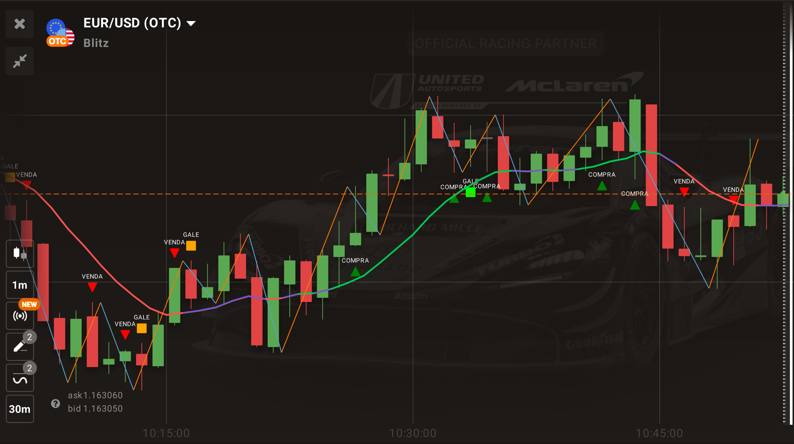
EUR/USD trend reversal with Nexus Script.
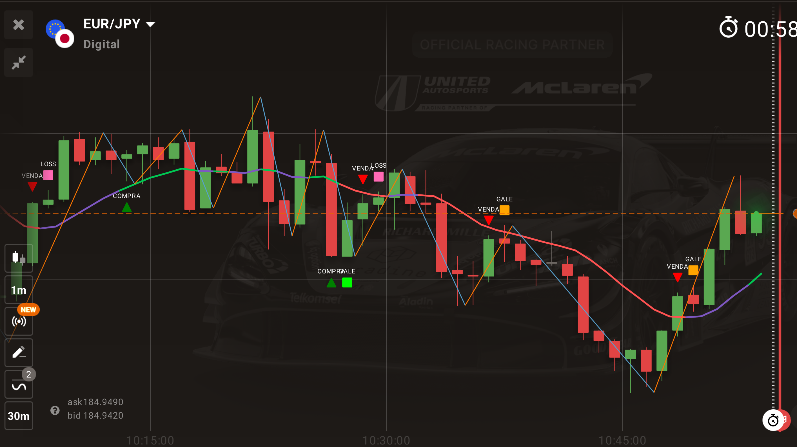
EUR/JPY trend continuation setup.
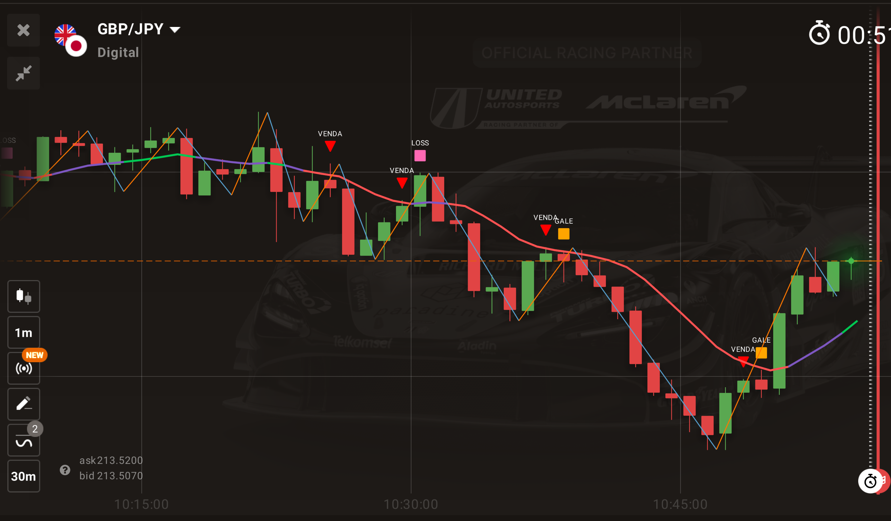
GBP/JPY entry timing using Nexus Script.
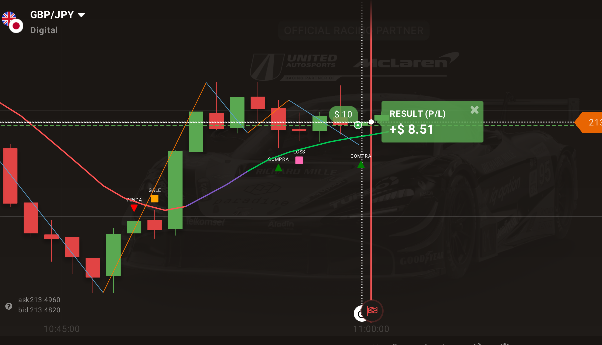
GBP/JPY multi-indicator signal confirmation.
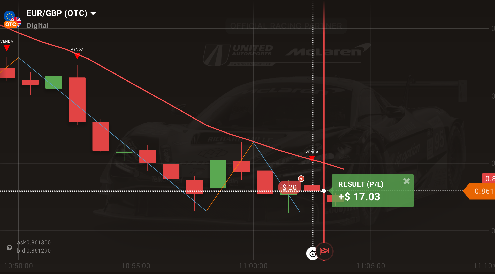
EUR/GBP strong sell confirmation example.
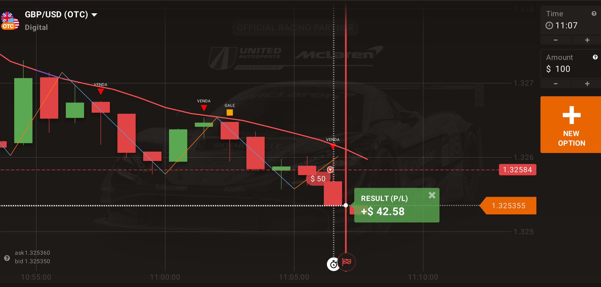
GBP/USD successful trade result.
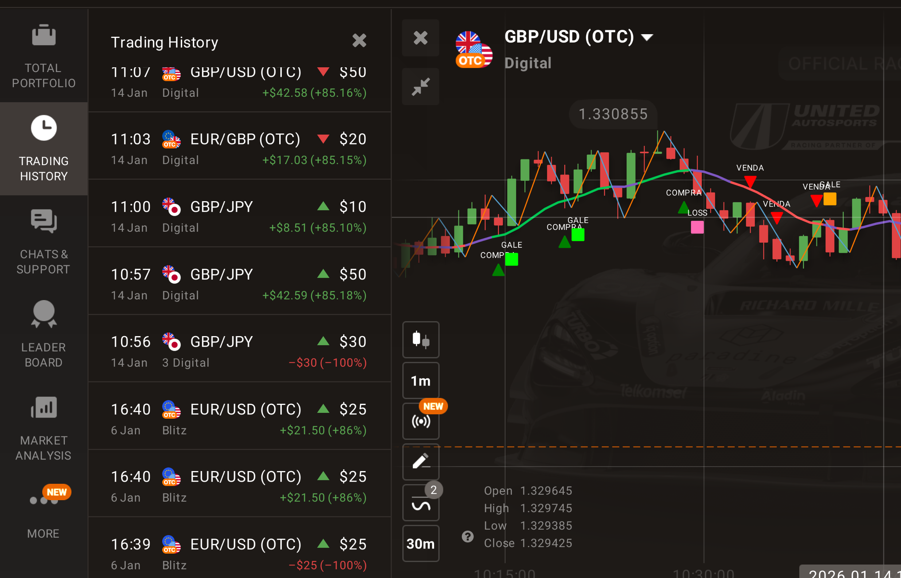
Trading history window showing recent results and performance.
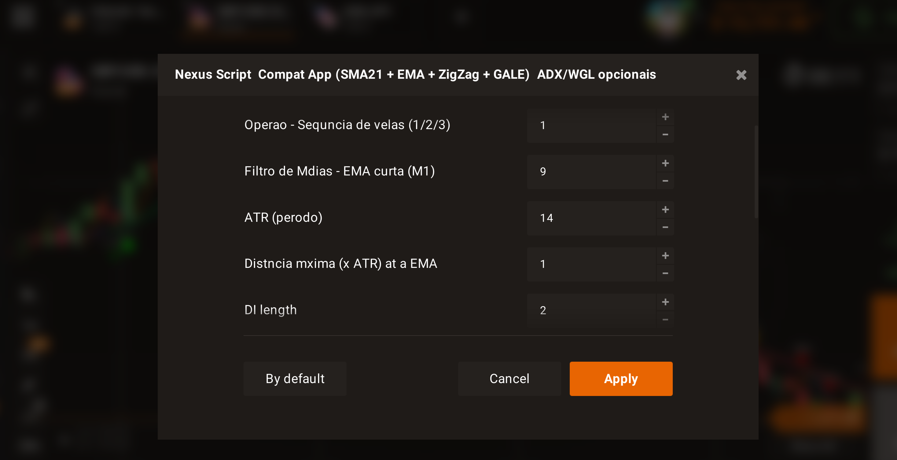
Nexus Script settings window with strategy parameters displayed.
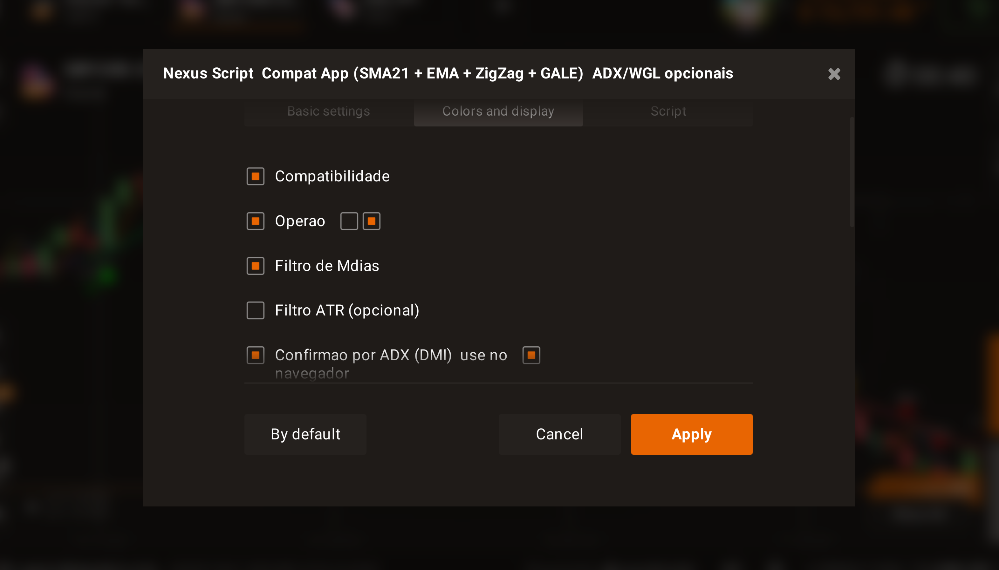
Nexus Script compatibility settings window with optional filters and ADX confirmation.
 GBP/USD downtrend with sequential sell entries.
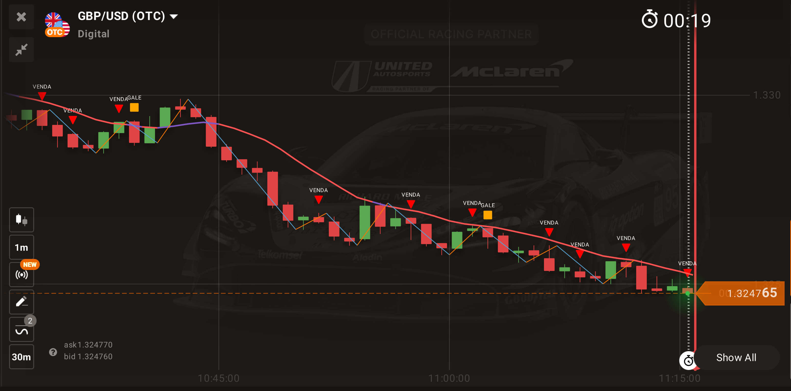
USD/JPY strategy with ZigZag and EMA indicators.
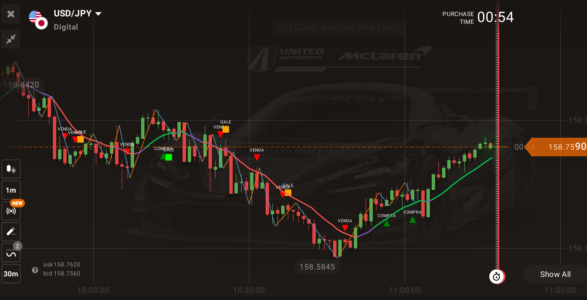
Chart Analysis — Active Nexus Script and ZigZag Indicators.
GBP/USD downtrend with sequential sell entries.
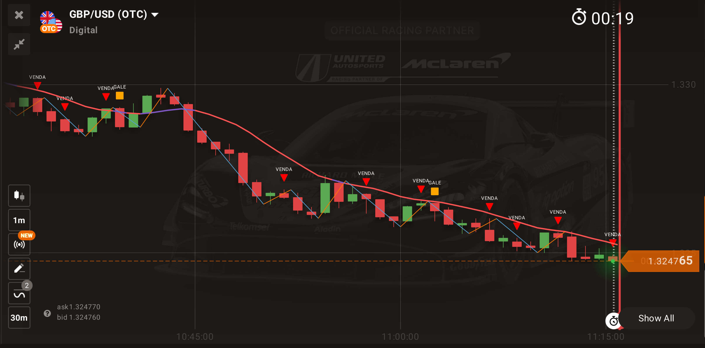
USD/JPY strategy with ZigZag and EMA indicators.
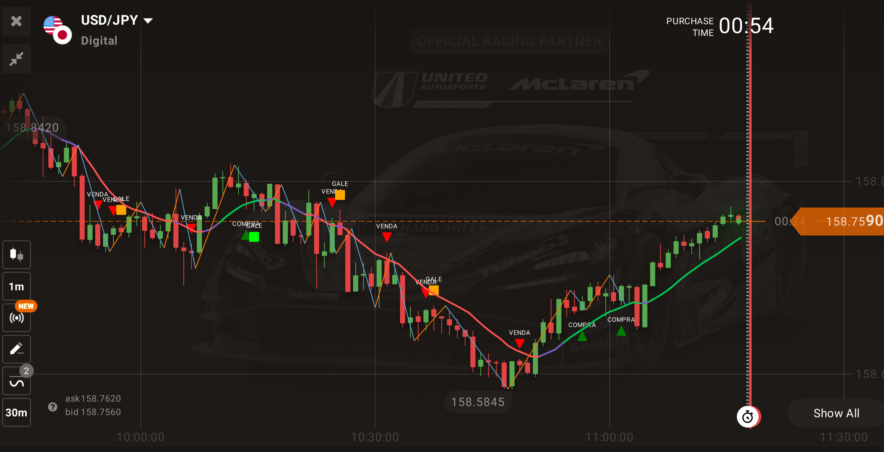
Chart Analysis — Active Nexus Script and ZigZag Indicators.